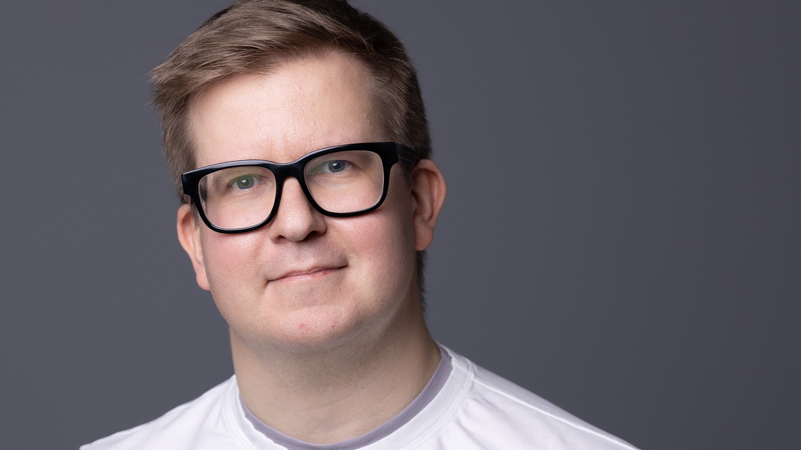

Часть I. Наука, которая становится будущим
Кандинский начинается с матчасти
Андрей Кузнецов
Директор лаборатории FusionBrain, AIRI (Сбер)

Город, где университет становится центром
Первый раз я приехал в Иннополис в такую погоду, что город запомнился прежде всего ветром. Это была то ли ранняя весна, то ли поздняя осень: холод, пустые улицы, ощущение, что на улицу выходить просто страшно. Ребята рассказали мне про местный студенческий челлендж — перемещаться между зданиями и общежитиями по коридорам так, чтобы как можно дольше не выходить наружу. Я тогда понял, почему такой челлендж вообще мог появиться.
Но потом я приехал снова, уже в другое время года, по приглашению Александра Гасникова. Было солнечно, свежо, видно Волгу. Я сам родился и вырос на Волге, в Самаре, поэтому это ощущение воды, пространства и воздуха мне очень близко. Коллеги свозили меня в Свияжск, я посмотрел на город иначе — не как на место с экстремальной погодой, а как на академгородок, где университет действительно становится центром жизни.
Мне кажется, это очень важная городообразующая история. Когда студенты, исследователи, преподаватели и инженеры локализованы в одной среде, они не распадаются по разным траекториям сразу после лекции или совещания. Они продолжают жить внутри университетской экосистемы. У них рядом жилье, лаборатории, общение, инфраструктура, природа, близкие города. И это создает особый режим мышления: ты не просто работаешь в университете, ты находишься внутри среды, которая постоянно напоминает тебе, зачем ты здесь.
Именно тогда у нас появилась мысль: было бы интересно открыть здесь совместную лабораторию или собрать локальную группу, чтобы не выдергивать ребят из их среды, а подключать их к большим задачам прямо здесь, в Иннополисе. Для науки это очень важный принцип: иногда правильная среда сама помогает удерживать человека в нужном профессиональном состоянии.
Второй класс, математика и первый вызов
В моем движении в науку есть два момента, которые я хорошо помню. Первый — еще из начальной школы. После второго класса учительница сказала моим родителям, что у меня высокая склонность к гуманитарным наукам, а математика — точно не мое. Наверное, у меня тогда действительно были тройки по математике. Но эта фраза меня зацепила.
Все лето я занимался математикой. Не потому, что кто-то нарисовал мне карьерный план исследователя в области компьютерного зрения. Просто появился вызов. Кто-то сказал: «Это не твое». А мне захотелось проверить, правда ли это. После этого математика пошла вверх, и, как ни странно, именно такой школьный эпизод стал одним из первых разворотов.
Здесь важный урок. Иногда человека формирует не похвала, а правильно услышанный вызов. Конечно, не всякая резкая фраза помогает. Но если внутри есть энергия сопротивления, она может превратиться в работу. Для меня это стало первым опытом: если хочешь разобраться, нельзя просто принять внешний ярлык. Нужно сесть и сделать свою часть пути.
Иннополис выделяет то, что университет здесь становится городообразующим объектом.
Космос внутри радужной оболочки
Второй момент был уже в университете. Преподаватель программирования Александр Куприянов предложил мне заняться компьютерным зрением в рамках его исследований. Меня всегда интересовала визуализация. В детстве я очень хотел стать астрономом, читал энциклопедии про звезды, космос, наблюдения. И вдруг мне предлагают анализ радужной оболочки глаза.
Когда смотришь на радужку, она действительно напоминает космос: переходы, структуры, сложный рисунок, множество деталей. Так я начал входить в компьютерное зрение — через базовые алгоритмы, преобразования Фурье, преобразование Радона, обработку изображений. Первой серьезной книгой для меня стали «Методы обработки изображений» под редакцией Виктора Александровича Сойфера. С этого момента компьютерное зрение стало моей основной экспертизой.
Потом появились данные дистанционного зондирования Земли. Я занимался космоснимками, писал диссертацию про методы обнаружения подделок на таких изображениях. В этом тоже была внутренняя связка с детским интересом к визуальному миру: от звезд и радужки глаза до спутниковых данных и генеративных моделей.
Наставники учат не только технике
Если говорить о наставниках, я бы начал с семьи. Моим базовым математическим навыкам я во многом обязан тете. Она всю жизнь была инженером, работала в энергетике, и у нее были очень сильные инженерные навыки. Она фактически натренировала меня на базовой математике.
В университете важную роль сыграл Александр Куприянов — это был старт в науку. Потом мои исследования были связаны с кафедрой геоинформатики, где моим научным руководителем стал Владислав Валерьевич Мясников. Он научил меня системности: как ставить эксперимент, как смотреть на результаты, как не довольствоваться первым красивым числом, как детально проверять то, что получилось.
Были и другие люди, которые повлияли на мой путь: Артем Никоноров, с которым мы работали по разным проектам, в том числе связанным со Сбером, Виктор Александрович Сойфер, чьи харизматичные наставления помогали понимать, что я нахожусь в правильном месте. Иногда наставничество — это не только техническое знание. Иногда человеку нужно услышать несколько слов от того, кто видит шире, и эти слова становятся внутренней опорой.
Как исследование стало продуктом
Проект, которым я действительно горжусь, — это модель «Кандинский». Я посвятил ей много времени и сил, занимался этим направлением до конца 2023 года. Сейчас команда продолжает развивать проект, а я уже наблюдаю за ним со стороны. Но для меня эта история остается очень важной.
До «Кандинского» была совместная работа с ребятами из Сбера — первая генеративная модель «Малевич». Потом я перешел в Сбер по приглашению и стал развивать команду «Кандинского». Самое интересное в этой истории то, что изначально это не задумывалось как продукт. Это была исследовательская история, сильный ресерч-проект. А потом он вырос в продукт и международный бренд.
Находиться в гонке с мировыми мастодонтами — отдельный вызов. У них больше ресурсов, больше вычислительных мощностей, больше маркетинга, больше возможностей. Но в истории науки всегда было важно уметь находить более умные решения при меньшем количестве ресурсов. Выйти из гонки легко, вернуться почти невозможно: новые модели появляются постоянно, метрики обновляются, Китай выпускает решения одно за другим, мировые команды двигаются быстро. Поэтому для меня было важно не просто делать модель, а удерживать темп.
Одним из ключевых моментов стало сотрудничество с командой Diffusers. В 2022 году нам удалось войти в этот крупный открытый фреймворк для text-to-image моделей. После этого «Кандинский» как бренд закрепился в международной среде. В определённые периоды по скорости относительного роста после появления в Diffusers мы даже обгоняли Stable Diffusion. Для исследовательского проекта это был очень сильный сигнал: нас знают, нас смотрят, с нами считаются.
Команда растет через обратную связь
Когда мы с Денисом Димитровым развивали «Кандинский», мы много думали о том, как дать ребятам почувствовать полезность того, что они делают. Нам было важно, чтобы про модель писали не только в маркетинговых релизах, а чтобы реальные люди пробовали ее, обсуждали, критиковали, показывали результаты.
Мы не ждали стопроцентно положительного фидбэка. Мы знали про проблемы: пальцы, буквы, странные детали. Но именно обратная связь помогала развиваться. Команда училась воспринимать критику правильно. В науке это суперважно. Первый эксперимент может тебя обрадовать: кажется, ты «порвал» метрику. Потом удовольствие проходит, ты начинаешь проверять и видишь, что где-то перепутал знак. Исправляешь — и метрика падает. В этот момент важно не демотивироваться, а понять: это нормальный рабочий процесс.
Так формируется исследовательский костяк. Не надо ждать гарантированно положительных результатов. Ошибки, человеческий фактор, сбои, даже будущие копайлоты и ассистенты — все это не отменяет необходимости самому понимать, что происходит. Наоборот, именно через такие моменты человек развивается глубже.
Учите матчасть
Один из ключевых навыков, который я несу с университетских времен, связан с фразой моего преподавателя математического анализа Льва Павловича Сольцева: «Учите матчасть, ребята». Сейчас эта фраза звучит особенно актуально.
Ассистенты очень сильно расслабляют. У человека всегда есть соблазн: сделать быстро с помощью помощника или самому разобраться, почему работает, почему не работает, где причина ошибки, что лежит в основании результата. Первая дорога выглядит удобнее. Но если идти только по ней, ты постепенно теряешь способность докапываться до сути.
Поэтому я люблю отправлять ребят читать лекции студентам или школьникам. Разные аудитории задают разные вопросы. Иногда из пятидесяти человек находится один студент, который очень хорошо понимает тему и может копнуть глубоко: как обучается мультимодальная модель, какие этапы обучения, что делать при взрыве градиентов, почему архитектура устроена именно так. Если ты не понимаешь, ты сядешь в лужу. И одно дело — один на один, другое — перед аудиторией.
Такие ситуации заставляют держать уровень. Хорошо давать мозгу челленджи. Хорошо ставить его в условия, где нельзя спрятаться за красивым ответом ассистента. Технологии будут упрощать жизнь: мы переходили от Pascal к C, от C к C++, потом к Java, C#, Python. Каждый этап что-то упрощал. Но нельзя отступать от основы. Чем выше уровень инструмента, тем важнее понимать, что происходит внутри.
ИИ еще не вышел на плато
Мне не кажется, что искусственный интеллект уже достиг пика. Мы еще идем вверх. Сейчас активно развиваются мультимодальные языковые модели, агенты, ассистенты, механики рассуждений, новые архитектуры. Трансформеры сегодня де-факто стандарт, но это не значит, что они останутся финальной формой. Появляются flow matching, дискретные диффузии, биоинспирированные подходы и другие эксперименты.
Но важно трезво смотреть на границы. Модели пока не вышли в физический мир адекватно. Они хорошо повторяют, хорошо компилируют рассуждения из знаний, но пока плохо понимают структуру мира. Увидеть через камеру, где лево, где право, кто дальше, кто ближе, какого размера объект и что с ним реально можно сделать, — это совсем другой уровень.
С роботами та же история. Они уже ходят, пытаются манипулировать предметами, падают, поднимаются, делают смешные и впечатляющие вещи. Но до полноценного сосуществования с человеком в физическом мире еще далеко. Поэтому мне не близка безоговорочная вера в бенчмарки. Модель может отлично выступить на закрытом наборе задач, а реальный пользователь скажет: «Я с ней говорю, и она отвечает странно». Бенчмарк важен, но он не равен реальности.
Наука и бизнес: задача, метрика, закрытый бенчмарк
Если говорить о связи науки и бизнеса, мне близка советская идея конструкторского бюро как моста между академией и производством. Тогда были реальные физические объекты: ракеты, двигатели, сложные системы. Производство ставило задачу, а исследователи помогали искать решение там, где существующих инженерных инструментов не хватало.
Сегодня логика та же. Бизнес не должен приходить к исследователям с формулировкой: «Придите и предложите нам что-нибудь». Так не работает. Нужен постановщик задачи. Нужно четко понимать: какую проблему мы не можем решить, почему она важна, какой прирост даст результат, по какой метрике мы будем оценивать успех.
Для хорошей коллаборации нужен понятный процесс: задача, метрика, закрытый бенчмарк. Компания может подготовить собственные данные, сформулировать критерии, дать нескольким исследовательским группам одинаковый вызов и потом выбрать лучшее решение. Это не убивает науку. Напротив, это дает исследователю реальную задачу и понятный способ проверить, сработала ли идея.
Путь иногда важнее точки назначения
Для перезагрузки я люблю путешествовать. Конференции для меня — не только способ пообщаться с коллегами, но и возможность увидеть новые места. Еще со школы и студенчества я люблю баскетбол, периодически играю, когда есть возможность. И мне нравится ездить за рулем: ощущение, что ты куда-то двигаешься, что путь сам становится частью энергии.
Иногда запоминается не место, а дорога к нему. В студенческие годы я впервые один поехал за границу на конференцию в Португалию. Уже по дороге получил сообщение, что рейс отменен из-за забастовки Lufthansa. Пришлось в большом европейском аэропорту быстро разбираться, перестраивать маршрут, лететь через другие города, в итоге добираться каким-то маленьким самолетом.
Такие ситуации тоже учат. Ты оказываешься в нетипичном положении, где нельзя ждать готового решения. Нужно быстро понять, куда идти, с кем говорить, как перестроить маршрут. В этом есть та же логика, что и в исследовании: неизвестность не должна останавливать. Она должна включать мышление.
Дочитать главу
Оставьте e-mail — пришлём главу целиком и сообщим о выходе книги.
Вопросы и ответы
Почему Иннополис для меня оказался важной средой?
Потому что это город, где университет действительно становится центром жизни. Здесь можно локализовать студентов, исследователей и лаборатории в одной академической экосистеме.
С чего начался мой путь в науку?
С вызова в школе и с университета, где я вошел в компьютерное зрение через анализ изображений, радужную оболочку глаза, преобразования Фурье, обработку изображений и данные дистанционного зондирования Земли.
Почему проект «Кандинский» для меня особенный?
Потому что это пример обратного движения: не продукт, в который попытались встроить исследование, а исследование, которое выросло в продукт и международный бренд.
Что помогло команде расти?
Честная обратная связь, работа с критикой, готовность видеть ошибки и не демотивироваться, когда первый красивый результат после проверки становится менее красивым.
Какой главный навык нужен молодым исследователям в эпоху ассистентов?
Умение учить матчасть и докапываться до сути. Ассистент может ускорить работу, но не должен заменять понимание.
Как правильно соединять науку и бизнес?
Через понятный процесс: задача, метрика, закрытый бенчмарк. Исследователю нужна не абстрактная просьба «придумать что-то», а ясно поставленная проблема.
Цитаты героя
Иногда правильная университетская экосреда позволяет ребятам находиться в правильном мировосприятии.
Во втором классе мне сказали, что математика — не мое. Это очень сильно зацепило.
Радужная оболочка глаза выглядела как космос — с этого началось мое увлечение компьютерным зрением.
Опоры главы
- Сильная научная среда удерживает человека в правильной траектории и ускоряет рост команды.
- Путь в науку может начаться с вызова, случайной встречи или визуального образа, который зацепил воображение.
- Компьютерное зрение требует не только алгоритмов, но и способности видеть структуру мира через данные.
- Исследовательский проект может стать продуктом, если команда выдерживает темп, обратную связь и международную конкуренцию.
- ИИ-ассистенты полезны, но не заменяют матчасть, самостоятельное мышление и способность объяснить основу решения.
- Наука и бизнес соединяются не лозунгом, а правильно поставленной задачей, метрикой и честным бенчмарком.
- Настоящий технологический прогресс требует трезвости: маркетинг, бенчмарки и реальность пользователя не всегда совпадают.
Метрика покорителя
- Директор лаборатории «Фьюжн Брейн» AIRI и один из ключевых участников развития генеративной модели «Кандинский».
- Прошел путь от школьного вызова по математике к компьютерному зрению, генеративным моделям и международному AI-продукту.
- Сформировал фундаментальную экспертизу в обработке изображений, компьютерном зрении и анализе данных дистанционного зондирования Земли.
- Писал диссертацию по методам обнаружения подделок на космоснимках.
- Участвовал в создании первой генеративной модели «Малевич» и дальнейшем развитии «Кандинского».
- Вывел исследовательскую модель в международную среду через сотрудничество с командой Diffusers.
- Собирал команду вокруг честной обратной связи, самокритики и умения воспринимать ошибки как часть исследования.
- Отстаивает необходимость фундаментальной математической и технической базы в эпоху AI-ассистентов.
- Формулирует трезвый взгляд на развитие ИИ: прогресс идет быстро, но модели еще не понимают физический мир так, как человек.
- Сохраняет личную энергию через путешествия, баскетбол, дорогу, конференции и умение превращать неопределенность в задачу.
Забери себе
- 01
Не принимай чужой ярлык как приговор: иногда фраза «это не твое» становится началом роста.
- 02
Ищи наставников, которые учат не только предмету, но и способу ставить эксперимент.
- 03
Не бойся критики продукта или идеи: правильная обратная связь быстрее всего показывает, куда расти.
- 04
Пользуйся ассистентами, но не отдавай им понимание основы.
- 05
Регулярно ставь мозгу челленджи: выступления, вопросы аудитории, сложные задачи и новые маршруты держат мышление в форме.
- 06
Когда соединяешь науку и бизнес, сначала формулируй задачу, метрику и критерий успеха.
- 07
Помни, что путь иногда важнее точки назначения: неопределенность тренирует способность быстро мыслить и действовать.
Я действительно понимаю основу того, что делаю, или просто ускоряюсь за счет инструмента, которому слишком рано поверил?